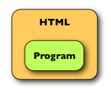

テンプレートシステム入門 (1) 歴史編
はじめに
テンプレートシステムとは、テンプレートとなるファイルをメインプログラムから読み込み、必要な箇所を書き換えて出力する仕組みのことです。 現在では Web アプリケーションにおいて動的に Web ページを生成するのによく使われます。
本シリーズでは、Web アプリケーション用のテンプレートシステムについて基本から理解してもらうことを目的とします。 また各種のテンプレートシステムについても紹介します。
第 1 回目となる本稿では、テンプレートシステムが生まれた歴史を紐解きます。 動的に Web ページを生成する方法が進化してきた過程を見ることで、テンプレートシステムの利点がわかります。
なお本稿の対象読者は、Web アプリケーション開発に興味のある方です。 特に、自分でテンプレートエンジンを作成しようと考えている方には参考になると思います。
動的に Web ページを生成する方法
テンプレートシステムについて説明する前に、Web アプリケーションで動的にページを生成する方法について説明しましょう。
動的に Web ページを生成する方法は、メインプログラムとの関係から見て大きく次の 3 つに分けられます1。
- 第 1 世代: メインプログラムに HTML を埋め込む方法
- 第 2 世代: HTML にメインプログラムを埋め込む方法
- 第 3 世代: メインプログラムと HTML とを分離する方法
また対象とする出力形式から見て、次の 2 つに分けられます2。
- テキスト汎用型: 任意のテキスト形式で利用可能
- HTML 専用型: HTML/XML でしか利用できない
もう少し説明を付け加えると、テキスト汎用型では HTML を単なる文字列として扱うのに対し、HTML 専用型では HTML を構造化されたデータとして扱う点が異なります。
参考までに、代表的なライブラリやフレームワークを分類してみます (表 1)。
表1. 代表的なライブラリやフレームワークの分類
| 生成方法 | テキスト汎用型 | HTML 専用型 |
|---|---|---|
| プログラムに HTML を埋め込む (第 1 世代) | CGI, Servlet | cgi.rb, Markaby, Jakarta ECS, Kahua, qwikWeb |
| HTML にプログラムを埋め込む (第 2 世代) | eRuby, PHP, JSP | ColdFusion |
| プログラムと HTML とを分離 (第 3 世代) | Velocity, Smarty, Template-Toolkit | XMLC, Amrita2, Tapestry |
以降、詳細について説明します。
第 1 世代: プログラムに HTML を埋め込む方法
図 1: 第 1 世代: プログラムに HTML を埋め込む
 動的に Web ページを出力する方法で一番原始的なのは、プログラムの中に HTML を埋め込み、print 文などで出力する方法です。
ここではこれを第 1 世代の方法と呼ぶことにします (図 1)。
動的に Web ページを出力する方法で一番原始的なのは、プログラムの中に HTML を埋め込み、print 文などで出力する方法です。
ここではこれを第 1 世代の方法と呼ぶことにします (図 1)。
この方法の利点は、仕組みが大変分かりやすいことと、他のライブラリを必要としないことと、どのプログラミング言語でも利用可能であることです。 そのため、初期の CGI プログラムや Java Servlet でよく使われました。 欠点は、HTML デザインの確認や変更がしにくいことです。
リスト 1-1 は CGI プログラムのサンプルです。 プログラムの中に HTML が文字列として埋め込まれており、それを print() で出力しています (HTML エスケープ (サニタイズ) は省略)。
リスト 1-1 : CGI プログラムのサンプル
require 'cgi'
cgi = CGI.new
print cgi.header
title = 'Example'
list = ['AAA', 'BBB', 'CCC']
print "<html>\n"
print " <body>\n"
print " <h1>#{title}</h1>\n"
print " <ul>\n"
for item in list
print " <li>#{item}</li>\n"
print " </ul>\n"
print " </body>\n"
print "</html>\n"print 文を使う方法は最も原始的な方法であり、HTML に限らずどんなテキスト形式でも利用できます (テキスト汎用型)。 これに対し、HTML/XML の生成のみに特化した方法も考案されました (HTML特化型)。 この方法は、HTML が構造化されたマークアップ言語である点を生かし、文字列ではない方法で HTML を表現します。 具体的には以下のような方法があります。
- HTML をネストした関数/メソッド呼び出しで表現する (例: cgi.rb, Markaby)
- HTML を木構造で表現する (例: Jakarta ECS)
- HTML をネストした配列/リストとして表現する (いわゆる「わびさび方式」のこと。例: Kahua, qwikWeb)
HTML 専用型では HTML を構造化されたデータとして扱うため、単なる文字列として扱うテキスト汎用型と比べると次のような利点があります。
- HTML の開始タグと終了タグが正しく対応付けされる
- タグ名や属性名が正しいかどうかチェックできる
- 自動的に HTML エスケープ (サニタイズ) することができる
ただし、__プログラム中に HTML を埋め込んでいるという点ではテキスト汎用型と変わりがない__ことに注意してください。 「HTML デザインの確認や変更がしづらい」という欠点も共通しています。 またテキスト汎用型と比べ、一般的には動作が重くなります。
例として、cgi.rb についている HTML エレメント出力用メソッドを使ったサンプルをお見せします (リスト 1-2, 1-3)。 cgi.rb では、HTML を文字列ではなくブロックつきメソッドのネストで表現します。 そのため、上の 3 つの利点がすべて当てはまります。
リスト 1-2 : cgi.rb による HTML 出力のサンプル (HTML エスケープは省略)
require 'cgi'
cgi = CGI.new('html4')
html = cgi.instance_eval {
html {[
head {
title { 'Example' }
},
body {[
h1('class'=>'capter') { 'Example' },
ul {[
li { 'AAA' },
li { 'BBB' },
li { 'CCC' },
]},
]},
]}
}
print htmlリスト 1-3 : 出力結果 (改行とインデントを追加)
<!DOCTYPE HTML PUBLIC "-//W3C//DTD HTML 4.01//EN"
"http://www.w3.org/TR/html4/strict.dtd">
<HTML>
<HEAD>
<TITLE>Example</TITLE>
</HEAD>
<BODY>
<H1 class="capter">Example</H1>
<UL>
<LI>AAA</LI>
<LI>BBB</LI>
<LI>CCC</LI>
</UL>
</BODY>
</HTML>もうひとつ、Markaby を使ったサンプルをお見せします (リスト 1-4, 1-5)。 cgi.rb と比べて、Markabyではよりシンプルに記述できるようになっており、またデフォルトで HTML エスケープ (サニタイズ) されるという利点があります。
リスト 1-4 : Markaby のサンプル
doctitle = 'Exmample'
list = ['<AAA>', 'B&B', '"CCC"']
require 'rubygems'
require 'markaby'
builder = Markaby::Builder.new
builder.html {
head {
title(doctitle)
}
body {
h1(doctitle, :class=>'chapter')
# or h1(:class=>'chapter'){doctitle}
ul {
for item in list
li(item) # or li { item }
end
}
}
}
puts builder.to_sリスト 1-5 : 出力結果 (改行とインデントを追加)
<html>
<head>
<meta content="text/html; charset=utf-8" http-equiv="Content-Type"/>
<title>Exmample</title>
</head>
<body>
<h1 class="chapter">Exmample</h1>
<ul>
<li><AAA></li>
<li>B&B</li>
<li>"CCC"</li>
</ul>
</body>
</html>第 2 世代: HTML にプログラムを埋め込む方法
図 2: 第 2 世代: HTML にプログラムを埋め込む
 Web 黎明期のように HTML が単純なうちは print 文でちまちま出力する方法でも良かったのですが、Web ページが複雑かつ大きくなるにつれ、この方法は破綻しました。 print 文として埋め込まれた HTML の変更があまりに面倒だったからです。
ほどなく現れたのが、HTML の中にプログラムを埋め込む方法です (これを第 2 世代の方法と呼ぶことにします)。 この方法はファイルの形式が HTML に近いため、第 1 世代と比べて HTML デザインの確認や変更がしやすいという利点があります。 特に、動的な部分が少なくほとんどの部分が静的な HTML である場合は、この方法のほうが圧倒的に簡単です。
この方法を広めたのは、なんといっても PHP でした。 また「プログラムが埋め込まれた HTML」を「HTML が埋め込まれたプログラム」に変換するのもそう難しくない3ため、eRuby や JSP など似たようなものが数多く登場しました。
この方法もテキスト汎用型と HTML 専用型に分けることができます。
まずテキスト汎用型の例として、eRuby のサンプルプログラムをお見せします (リスト 2-1)。 eRuby では、次のような記法で Ruby コードをテキストファイル中に埋め込みます。
- 「<% … %>」は Ruby の文として実行される
- 「<%= … %>」は Ruby の式として評価され、出力される
- 「<%=# … %>」はコメントであり、読み飛ばされる
リスト 2-1: eRuby のサンプル
<% title = 'Example' %>
<% list = ['<AAA>', 'B&B', '"CCC"'] %>
<html>
<body>
<h1><%=h title %></li>
<ul>
<% for item in list %>
<li><%=h item %></li>
<% end %>
</ul>
</body>
</html>print() を使ったリスト 1-1 と比べると、ずいぶん HTML に近いことが分かります。 ただし、「<% %>」や「<%= %>」は HTML の仕様に反する記法なので、ブラウザでデザインを確認したり、HTML バリデータでチェックするということはできません4。
次に HTML 専用型の例をお見せしたいのですが、Ruby では適当なものが見つかりませんでしたので、かわりに XML 構文を使った JSP の例をお見せします (リスト 2-2)。 JSP (Java ServerPage) は基本的にはテキスト汎用型ですが、ファイルの拡張子を「.jspx」にすることで、埋め込みコードを XML の構文で記述できるようになります。
リスト 2-2:
<?xml version="1.0" encoding="UTF-8"?>
<html xmlns:c="http://java.sun.com/jsp/jstl/core"
xmlns:jsp="http://java.sun.com/JSP/Page">
<jsp:directive.page contentType="text/html;charset=UTF-8" />
<jsp:directive.page import="java.util.List, java.util.ArrayList"/>
<c:set var="title" value="Example"/>
<jsp:scriptlet>
<![CDATA[
List list = new ArrayList();
list.add("<AAA>");
list.add("B&B");
list.add("\"CCC\"");
pageContext.setAttribute("list", list);
]]>
</jsp:scriptlet>
<body>
<h1><c:out value="${title}"/></h1>
<ul>
<c:forEach var="item" items="${list}">
<li><c:out value="${item}"/></li>
</c:forEach>
</ul>
</body>
</html>テキスト汎用型である eRuby と比べると、XML 構文を使った JSP は HTML 専用型であるため、「開始タグと終了タグが正しく対応付けされる」5などの利点があります。 ただし、__ロジックを HTML 中に埋め込んでいるという点ではどちらも同じ__です。
なお余談ですが、JSP は
- EL (Expression Language) の機能が貧弱 (メソッドを呼び出せないなど)
- 変数のスコープが多くて分かりづらい (page/request/session/applicaiton)
- Servlet コンテナがないと利用できない (内部で Servlet に変換されて実行されるため)
- カスタムタグを作るのが大変
- 動作が重い
など、問題点が多い仕様です。 それに比べると、eRuby は実に単純であり、しかもそれで充分役に立っています。 Ruby ユーザは eRuby の単純さに感謝しましょう。
第 3 世代: プログラムと HTML とを分離する方法
図 3: 第 3 世代: プログラムと HTML とを分離する
 HTML 中にプログラムを埋め込む方法によって、特にプログラムが小さい場合は開発作業が格段に楽になりました。
しかし、この方法にも次のような問題点が残っています。
HTML 中にプログラムを埋め込む方法によって、特にプログラムが小さい場合は開発作業が格段に楽になりました。
しかし、この方法にも次のような問題点が残っています。
- HTML とプログラムとがひとつのファイルに混在している。
- → 一方を変更すると他方にも影響を与えてしまう
- → デザイナーとプログラマーが協業できない (独立して作業できない)
特に、Web アプリケーションのプログラム部分が大規模かつ複雑になるにつれ、この問題点がクローズアップされるようになりました。
これを解決するために、プログラムと HTML とを別々のファイルに分離する方法が生み出されました。 具体的には、__テンプレートとなる HTML ファイルをプログラムから読み込み、必要な箇所を書き換えて出力する__というものです。 そのような仕組みをテンプレートシステムといい、それを実現するためのライブラリをテンプレートエンジンといいます (両者の違いについては後述します)。
テンプレートシステムでは、テンプレートを読み込んで必要な箇所を書き換えて出力します。 そのため、__書き換える箇所を示す「目印」をテンプレート中に埋め込む__必要があります。 この「目印」の記法によって、テキスト汎用型か HTML 専用型かに分かれます。
テキスト汎用型では、HTML とは関係ない独自の記法を使って「目印」を埋め込みます。 記法が HTML ではないため HTML デザインが崩れる、HTML バリデータで検証できない、という欠点がありますが、HTML パーサを使わないので動作が軽い、仕組みが分かりやすく実装しやすい、などの長所もあります。
リスト 3-1, 3-2 は、PageTemplate というテンプレートエンジンのサンプルです。 変数の値を出力する「[%var …%]」や、繰り返しを表す「[%loop …%]」など、独自の記法を使っているのが分かります。
リスト 3-1 : ex-pagetemplate.tmpl
<html>
<body>
<h1 class="[%var klass %]">[%var title :escapeHTML %]</h1>
<ul>
[%loop list %]
<li>[%var value :escapeHTML %]</li>
[%end loop %]
</ul>
</body>
</html>リスト 3-2: ex-pagetemplate.rb
title = 'Example'
klass = 'chapter'
list = [
{'value'=>'<AAA>'},
{'value'=>'B&B'},
{'value'=>'"CCC"'},
]
require 'rubygems'
require 'PageTemplate'
template = PageTemplate.new()
template.load('ex-pagetemplate.tmpl')
template['title'] = title
template['klass'] = klass
template['list'] = list
print template.outputこのタイプのテンプレートエンジンは非常に多く、有名なものだと
- Velocity (Java)
- Smarty (PHP)
- Template-Toolkit (Perl)
- Cheetah (Python)
などが挙げられます。
次に HTML 専用型ですが、HTML 専用型では「目印」を埋め込むのに HTML の記法を利用します (一般的には id 属性か独自の属性を使うことが多いです)。 HTML と同じ記法なので HTML デザインがまったく崩れないことが最大の特徴ですが、HTML パーサと DOM ツリーを使うため動作が重い、仕組みが複雑で学習コストがかかる、といった欠点があります。 特に HTML 専用型は仕組みや仕様にクセがある場合が多く、学習コストは高くなる傾向にあります。
リスト 3-3, 3-4 は、代表的な HTML 専用型である Amrita2 のサンプルです。 Amrita2 では id 属性が「目印」になっていて、id 属性と同じ名前のデータを用意することで、テンプレートが書き換えられて出力されます。
リスト 3-3 : ex-amrita2.html
<html>
<body>
<h1 id="title">TITLE</h1>
<ul>
<li id="list">ITEM</li>
</ul>
</body>
</html>リスト 3-4 : ex-amrita2.rb
require 'rubygems'
require 'amrita2/template'
include Amrita2
context = {
:title => a(:class=>'chapter') { 'Example' },
:list => ['<AAA>', 'B&B', '"CCC"'],
}
template = TemplateFile.new('ex-amrita2.html')
template.expand(output='', context)
print outputこのタイプのテンプレートエンジンはテキスト汎用型ほど多くはありませんが、
- XMLC (Java)
- Tapestry (Java)
- Zope PageTemplate (Python)
- Kid (Python)
- Tempura (Ruby)
などが挙げられます。
なお「テキスト汎用型は独自の記法を使う」「HTML 専用型は HTML の記法を使う」というのは、あくまでそういう傾向があるというだけで、絶対的な法則ではありません。 たとえば Kwartz のように HTML の記法を使うけどテキスト汎用型というのもあります (独自記法は必ずしも HTML と違ってなければならないというわけではないということです)。
またテンプレートシステムでは、テキスト汎用型か HTML 専用型かということも重要ですが、__プレゼンテーションロジックをテンプレート中に含めるのかどうか__という点のほうがより重要です。 これについては次回説明します。
テンプレートシステムについての補足
「テンプレートシステム」と「テンプレートエンジン」の違いについて
本稿では、「テンプレートシステム」と「テンプレートエンジン」の 2 つの用語を使いわけています。 一般的には両者は用語として区別されずに使われますが、本稿では次のように定義します。
- 「テンプレートシステム」とは、メインプログラムと HTML とを分離するための「仕組み」のことを指す。
- 「テンプレートエンジン」とは、メインプログラムと HTML とを分離するための「具体的なライブラリ」のことを指す。
もっというと、テンプレートシステムという「仕組み」を実現するだけなら、必ずしもテンプレートエンジンは必要ありません。
たとえば、一般的には PHP はテンプレートエンジンとは見なされません (本稿でも PHP は「第 2 世代の方法」に分類しました)。 しかし、関数 include() を使えば通常の PHP スクリプトをテンプレートとして使うことができます (リスト 4-1)。 これはまさに、テンプレートエンジンなしでテンプレートシステムを使った例といえます。
リスト 4-1 : include() を使って、PHP スクリプトをテンプレートとして使う
----- main.php -----
<?php
$title = 'Exampe';
$items = array('AAA', 'BBB', 'CCC');
include('template.php');
?>
----- template.php ----
<h1><?php echo $title; ?></h1>
<ul>
<?php foreach ($items as $item) { ?>
<li><?php echo $item; ?></li>
<?php } ?>
</ul>eRuby はテンプレートエンジンの夢を見るか
本稿では、eRuby を「第 2 世代の方法」に分類しました。 つまり、eRuby をテンプレートエンジンではないとしたわけです。 この分類は妥当でしょうか。
筆者は、妥当だと思っています。 __eRuby は汎用のテキストプロセッサであり、メインプログラムと HTML との分離を目的としたテンプレートエンジンではない__というのが筆者の見解です。
多くのアプリケーションで eRuby をテンプレートエンジンがわりに使っていますが、それは前のセクションでの PHP の例と同じで、あくまでテンプレートシステムとして使っているだけであり、eRuby 自体はテンプレートエンジンではないです。 たとえるなら、コップを花瓶がわりに使ったとしても、コップはコップであり花瓶ではないのと同じです。 定義と用途とを混同してはいけません。
ただし、こんな細かい違いは普通に生きている限り気にする必要はありません。
なお、同じことが JSP でもいえます。 本稿における用語の定義だと JSP はテンプレートエンジンではありませんが、テンプレートシステムとして使うことができます6。
eRuby や PHP があればテンプレートエンジンはいらないか
eRuby や PHP のような第 2 世代型のツールは、PageTemplate や Velocity や Smarty のようなテキスト汎用型のテンプレートエンジンとよく似ています。 実際、eRuby や PHP はそのままテンプレートエンジンのかわりとして使うことができます。 両者には違いがあるのでしょうか。
両者を比べると、次のような違いがあります。
- 目的が違う
- PHP や eRuby の目的は、任意のテキストに文や式を埋め込んで実行すること
- テンプレートエンジンの目的は、メインプログラムと HTML とを分離すること
- 見た目が違う
- PHP や eRuby は、PHP や Ruby をそのまま使う
- テンプレートエンジンでは、独自の言語を使う (ことが多い)
- 利点や欠点はよく似ている
- 利点: 任意のテキスト形式で使える、条件分岐や繰り返しを自由に埋め込める、など
- 欠点: HTML のデザインが崩れる、HTML Validator が使えない、など
こうしてみると、目的や見た目は違うものの、利点や欠点はよく似ていることがわかります。 実際のところ、多くの機能を望まなければ、テキスト汎用型のテンプレートエンジンを PHP や eRuby のような第 2 世代型のツールで置き換えても、大きな問題は生じません。
その他、次のような違いがあります。
- 速度は、PHP や eRuby のような第 2 世代型のほうがずっと高速です。たとえば PHP で include() を使う方法は Smarty よりも約 3 倍高速であり、eRuby は PageTemplate よりも 2 倍以上高速です。またテンプレートエンジンは大きなライブラリを読み込む必要があるため、特に CGI では不利です。
- 学習コストは、PHP や Ruby の知識がそのまま使える第 2 世代型のほうが低いです。たとえば繰り返しや条件分岐をしたい場合、eRuby だと Ruby の for 文や if 文がそのまま使えますが、テンプレートエンジンを使う場合は専用の構文を覚える必要があります。
- 式や文の記述能力は、PHP や Ruby がそのまま使える第 2 世代型のほうが高いです。たとえば 3 項演算子や整数の余剰を求める演算子 (%) は PHP にも Ruby にもありますが、それらを用意しているテンプレートエンジンは少なく、その分記述能力は劣ります。他にも、たとえば Velocity 1.4 では整数は扱えるが小数は扱えないなど、多くのテンプレートエンジンで機能の低さが目立ちます。ただし、機能が低いおかげで余計なロジックが記述できないため、プレゼンテーション層にはテンプレートエンジンのほうがふさわしいとする考え方もあります7。
- PHP や eRuby のような第 2 世代型と比べると、テンプレートエンジンは Web アプリケーションに必要な機能が備わっています。たとえば、複数のページにおいてレイアウトを統一する機能や、他のテンプレートを読み込む機能や、出力をキャッシュする機能などが挙げられます。
- セキュリティについては、テンプレートエンジンのほうが優れている場合があります。たとえばデフォルトで HTML エスケープするなどです。ただし多くのテンプレートエンジンは、PHP や eRuby と比べて大した違いがないのが実情です。
こうしてみると、PHP や eRuby のような第 2 世代型と比べて、テキスト汎用型のテンプレートエンジンは利点が少ないことがわかります。 むしろ、欠点が多いといったほうがいいでしょう。
これらの欠点をよく見ると、__テンプレートエンジンが独自の記述言語を使っていることが原因__です。 そのため、テンプレートエンジンが独自言語を使うことなく、PHP や Ruby をそのまま使うようにすればこれらの欠点は解決されます。 実際、Mako や Tenjin のように独自のテンプレート言語を使わず、Python や Ruby といったプログラミング言語をそのまま記述言語として用いたテンプレートエンジンが台頭しつつあります。
筆者としては、Smarty や PageTemplate のような独自の記述言語を使ったテキスト汎用型テンプレートエンジンを使うくらいなら、PHP や eRuby のような第 2 世代型の方法を使い、足りない機能があれば自分で追加することをお勧めします。 またこれからテンプレートエンジンを自作しようとする方は、特別な理由がない限りは、独自言語を使わず Ruby や PHP や Python などをそのまま使うことを強くお勧めします。
XSLT をプレゼンテーション層に使うのはよくない
プレゼンテーション層に XSLT を使ったシステムがありますが、これはよくないアイデアですのでやめるべきです。
XSLT (XML Stylesheet Language Transformations) とは、XML を別の形式の XML に変換するための技術です。 これを使うと、たとえばメインプログラムで中間形式の XML を出力し、XSLT を使ってそれを XHTML に変換し出力する、ということができます。 この場合、出力する XHTML のデザインを変更したいときは XSLT スクリプトだけを変更すればよく、中間形式の XML およびメインプログラムには何の変更も必要ありません。 つまり、メインプログラムとプレゼンテーション層とを疎結合にできます。 また XSLT 自体が任意の XML を任意の XML に変換できるだけの柔軟さを持っています。
しかし、XSLT は文法が複雑なうえ、動作が大変遅いという欠点を持っています。 またメインプログラムとプレゼンテーション層を疎結合にするのは、テンプレートシステムでも充分実現できます。 そもそも Web アプリケーションが出力するページは形式が一定のものばかりであり、XSLT ほどの柔軟性は必要ありません。 それよりも XSLT の複雑さと動作の重さのほうが問題になります。
筆者は以前、プレゼンテーション層に XSLT を使ってしまったために、Java で作成されているにも関わらず CGI より遅くなったシステムを目の当たりにしたことがあります。 いくら速い言語を使っても、アーキテクチャがまずいとアプリケーションは遅くなるという典型的な例でした。 みなさんも、XSLT の使いどころを間違わないようにしましょう8。
まとめ
本稿では、動的に HTML を出力する方法を以下のように分類して説明しました。
- プログラムとの関係からみた分類
- 第 1 世代: プログラムに HTML を埋め込む (CGIプログラム、cgi.rb など)
- 利点: 仕組みが極めて単純、他のライブラリを必要としない、どんな言語でも使える
- 欠点: HTML デザインの確認や変更がしにくい
- 第 2 世代: HTML にプログラムを埋め込む (eRuby、PHP など)
- 利点: 仕組みが単純、HTML デザインの確認や変更がしやすい
- 欠点: HTML とプログラムとが混在している
- 第 3 世代: プログラムと HTML とを分離する (テンプレートシステム)
- 利点: HTML デザインの確認や変更がしやすい、プログラマーとデザイナーとが協業しやすい
- 欠点: 仕組みは複雑、学習コストがかかる
- 第 1 世代: プログラムに HTML を埋め込む (CGIプログラム、cgi.rb など)
- 出力形式による分類
- テキスト汎用型
- 利点: 任意のテキスト形式で使える、動作が軽い、仕組みや実装が簡単
- 欠点: HTML デザインが崩れる、HTML Validator で検証できない
- HTML 専用型
- 利点: HTML デザインが一切崩れない、HTML Validator で検証できる
- 利点: HTML や XML しか扱えない、動作が重い、仕組みが複雑で学習コストがかかる
- テキスト汎用型
その他、以下について説明を行ないました。
- 用語の違い
- 「テンプレートシステム」… メインプログラムと HTML とを分離するための仕組み
- 「テンプレートエンジン」… それを実現するための、具体的なライブラリ
- 第 2 世代型と、テキスト汎用型テンプレートエンジンとの比較
- 似てはいるが、そもそもの目的が違う
- 独自の記述言語を使うテンプレートエンジンよりは、第 2 世代型を使う方がお勧め
- eRuby は、厳密にはテンプレートエンジンではない
- 定義と用途とを混同してはいけない
- XSLT をプレゼンテーション層に使ってはいけない
次回は、テンプレートシステムについてより詳しい説明を行ないます。
テンプレートシステム入門 連載一覧
-
「第 N 世代」という名前はこの記事で便宜上つけたものです。 ↩
-
「テキスト汎用型」「HTML 専用型」という名称もこの記事で便宜上つけたものです。 ↩
-
Ruby であれば、30 行で実装できます。 ↩
-
ここはもう少し考慮して eRuby の仕様を決めて欲しかったです。 ↩
-
開始タグと終了タグが正しく対応付けされるのは入力となる JSP ファイルであって、出力された HTML については保証されません。これは、正しくない HTML の断片を変数にいれてそれを出力するということが可能なためです。 ↩
-
初期の JSP は確かに第 2 世代型でしたが、JSP 2.0 以降は EL (Expression Language) を使うようになり、Java の文や式を埋め込むことはほぼなくなったため、第 3 世代に分類するほうがいいかもしれません。 ↩
-
ただし、筆者はこの意見に反対です。理由は次回説明します。 ↩
-
たとえば、PC 向けのページをケータイ向けに自動変換するといった用途であれば、XSLT も悪くないでしょう。 ↩